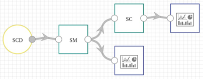

StreamPipes Siddhi-Processor is a component that enables analysis of data streams in a context of CEP (Complex Event Processing) using StreamPipes as underlying platform.
In current version (0.67.0), StreamPipes (SP) Siddhi-Processor requires from users to write Siddhi queries as plain String objects. It is implemented as a wrapper that provides means of query execution and mapping of SP pipeline element’s input/output to the Siddhi application’s input/output, as well.
Currently, SP Siddhi wrapper supports part of commonly-used Siddhi EPL functionalities, with the rest of them, as well as other features and extensions, yet to be implemented. In addition, there are a few problems with SP UI and API when Siddhi processor is employed.
In following version (0.68.0), StreamPipes (SP) will provide object model representation of Siddhi EPL (Event Processing Language) for writing Siddhi queries implemented as a part of SP Siddhi wrapper. Significant changes to the Siddhi wrapper implementation are also expected.
SP Siddhi-Processor's purpose is to extract information and identify meaningful events (opportunities and threats) such as patterns, relationship between events, etc. It would receive its input from SP element(s), execute written query on received data, and forward execution result to other SP element(s).
Currently, implemented component’s input represents an output from MEWMA analysis done in the previous SP pipeline element, as shown in following image. Element that performs MEWMA is labeled with SM and SP Siddhi-Processor that executes query is labeled as SC.
MEWMA output represents a list of detected outliers along with their time of occurrence.
The goal of this component is to detect whether there were more than N outliers in the previous M consecutive inputs (lists of outliers). Therefore, it is implemented to output a total number of such inputs. This use-case corresponds to the CEP notion of a window, i.e., we want to detect a specific event in a time window of inputs. Resulting query looks like this, with the N and M being 50 and 5, respectively:
define stream MEWMAOutput(anomalies object); from MEWMAOutput#window.length(5)[list:size(anomalies) >= 50] select count() as count insert into OutputStream;
Current version of StreamPipes does not allow usage of lists in Siddhi wrapper (support for lists is expected for version 0.68.0). Therefore, instead of using list of detected outliers, we count them beforehand and input plain numbers into SP Siddhi-Processor. As a consequence, there is a little change to the presented query:
define stream MEWMAOutput(numOfAnomalies int); from MEWMAOutput#window.length(5)[numOfAnomalies >= 50] select count() as count insert into OutputStream;
For the sake of demonstration, an output from MEWMA was used, but there is no limitation as to which algorithm is being used, as long as the output represents a count of detected outliers, anomalies, etc... In fact, count of any occurrences of interest to the problem being solved can be used, regardless of the use-case.
Output of this component can be used by other SP pipeline elements to raise an alert, for further processing, visualization, etc.
This component receives input from any element that provides count of occurrences of interest. In case of demonstration, output from MEWMA is used.
After query execution, it outputs count of inputted values that correspond to the condition.
Since this component is implemented in a way that allows custom values for window length and number of occurrences, a user interaction is required. In essence, when user creates pipeline and employs this component, a corresponding window pops up which prompts user to enter said values.
StreamPipes (and this component, as well) is available for Linux, Windows and Mac OS X.
This component was developed on Linux machine. Docker and Docker Compose are required in order to run pipelines.